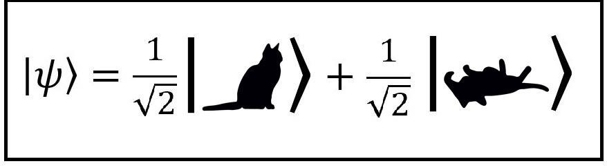
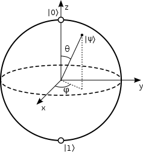
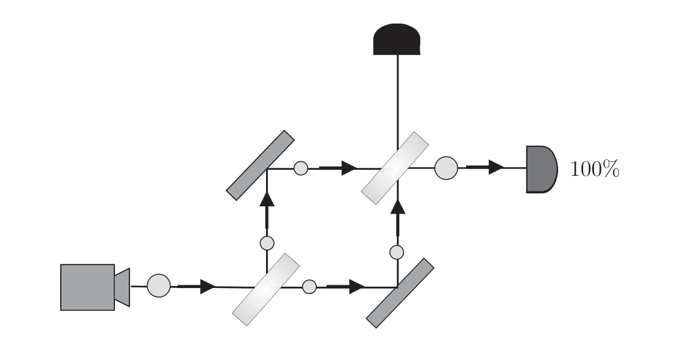

Notes on Various Topics Related to Quantum Theory
A Few Notes on the Projective Geometries (WIP)
A Few Notes on the Division Algorithm (WIP)
Notes on Groups, Rings, and Fields
A Few Notes on Cayley's Theorem
A Few Notes on Group, Ring and Field Theory (warning: WIP)
A Few Notes on Change of Basis
A Few Notes on Algebriac Structures (WIP)
Some notes on Density Operators, Expectation Values, and Matrix Shapes
A Few Notes on Bell States, Superdense Coding, and Quantum Teleportation

Notes on the Bloch Sphere

Notes on the Dual Beam Splitter Experiment
"
Last Update: 10.04.2019 by
dmm@1-4-5.net